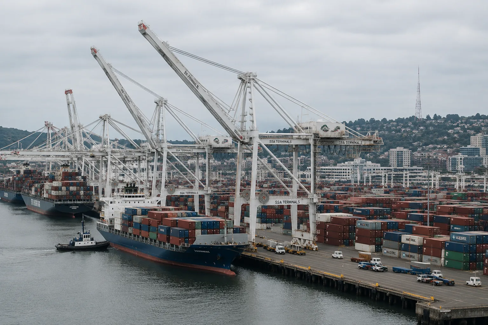

Contractor Concealed Crane Failures at Three West Coast Ports, Records Show
Tidegate Industrial Systems certified heavy cargo equipment as safe after internal inspections found cracked components, disabled alarms and recurring control failures. Employees say managers altered records rather than take cranes out of service.

A contractor responsible for maintaining some of the largest cargo cranes on the West Coast repeatedly concealed equipment failures, altered inspection findings and returned machinery to service before required repairs were completed, according to internal records reviewed by The Halden Ledger.
The records cover twenty-seven months of work by Tidegate Industrial Systems at terminals in Los Angeles, Oakland and Tacoma. They document at least eleven occasions when inspectors identified defects serious enough to require a crane or loading system to be removed from service. In eight of those cases, the final reports submitted to terminal operators omitted the defect, reduced its severity or stated that repairs had been completed when company work orders showed they had not.
The equipment remained in operation for a combined 1,340 hours after the original findings, moving thousands of containers above dockworkers, truck lanes and ship crews.
No death has been formally attributed to the defects identified in the records. Two incidents caused injuries. In one, a trolley brake released unexpectedly and sent a suspended container into a guide rail while workers were still inside the restricted area. In another, a technician suffered a fractured wrist when an access platform shifted during maintenance. Tidegate classified both events as operator error.
Internal messages sent after the incidents show safety employees questioning those conclusions.
“We have now assigned human error to the third event involving the same unresolved control fault,” one safety manager wrote following the trolley incident. “At some point the repetition becomes the finding.”
The message was not included in the incident package provided to the terminal.
Two versions of the same inspection
The Ledger compared 146 internal inspection forms with the corresponding reports delivered to terminal operators. Most were substantially identical. The exceptions followed a consistent pattern: findings that could keep equipment offline were softened or removed in the final version.
An inspection of Crane 14 in Los Angeles, for example, found cracking around two connection points in the machinery platform. The inspector marked the crane “out of service pending engineering review” and attached eight photographs. The report delivered to the terminal the following morning described “surface indications” requiring observation at the next scheduled maintenance interval. Crane 14 returned to operation that afternoon.
A repair order shows that reinforcement work was not completed until nineteen days later.
At an Oakland terminal, technicians reported that a wind-speed alarm had failed intermittently during three shifts. High winds can make container handling unstable and require crane operations to stop. The internal form classified the alarm as a critical safety system. In the customer report, the failure was recorded as a display problem that did not affect operations.
Technicians replaced the sensor twelve days later. Dispatch records show that the crane operated during two wind advisories in the interim.
What the records show
- Eleven internal findings called for equipment to be removed from service.
- Eight customer reports omitted or reduced the severity of those findings.
- Four reports stated repairs were complete before the corresponding work orders were closed.
- Three employees objected in writing to changes made after their inspections.
- Tidegate continued billing terminal operators for full safety-compliance coverage during the affected periods.
The Ledger obtained the records from a person with authorized access to Tidegate’s safety files. The source requested anonymity because the person remains employed in the cargo-handling industry and could face professional retaliation. The Ledger independently verified document dates, employee names, equipment numbers and repair activity against terminal logs, regulatory filings and interviews with nine current and former Tidegate employees.
Identifying details unrelated to the findings have been withheld to protect employees who participated in inspections or internal reviews.
Pressure to keep equipment moving
Port cranes are expensive even when they are idle. Terminal contracts reviewed by the Ledger impose performance targets tied to container volume and ship turnaround time. Tidegate can lose incentive payments when maintenance delays reduce the number of cranes available for work. Extended shutdowns can also trigger outside engineering reviews and require notice to insurers.
Current and former employees said managers rarely ordered them to falsify a record directly. Instead, disputed findings were routed through a “resolution review” where supervisors could reclassify a defect, remove an inspector’s recommendation or mark temporary work as a completed repair.
“Nobody sends an email saying, ‘Make the dangerous thing disappear,’” said a former Tidegate maintenance supervisor who left the company last year. “They ask whether you are certain. They ask whether you understand what an unnecessary shutdown costs. They ask whether you want your name on the decision that keeps a ship waiting. Then the report comes back with different words.”
Three inspectors objected in writing after their findings were changed. One wrote that the final report “does not reflect the condition observed or the recommendation I submitted.” Another refused to sign a revised form and was reassigned from terminal inspections to inventory work for six weeks, according to staffing records and two employees familiar with the decision.
Tidegate said assignments are based on operational need and denied punishing employees for raising safety concerns.
Company disputes that workers were endangered
In written responses to detailed questions, Tidegate acknowledged that reports can change between an initial inspection and delivery to a customer. The company said those changes reflect additional engineering review, not concealment.
“Tidegate Industrial Systems maintains a safety program that meets or exceeds every applicable federal, state and contractual requirement,” company spokesperson Allison Crewe said. “Preliminary observations are routinely evaluated by qualified personnel before final reports are issued. It is false and irresponsible to characterize that process as falsification.”
The company said all equipment referenced by the Ledger was safe to operate and that repairs were performed within appropriate timeframes. It declined to explain why four reports listed repairs as complete before internal work orders recorded the work, saying the documents use different administrative systems and should not be compared without “full operational context.”
Tidegate also said the trolley and platform incidents had been reviewed and were not caused by deferred repairs. The company would not provide the engineering analyses supporting those conclusions, citing employee privacy and proprietary maintenance procedures.
Two independent crane engineers who reviewed redacted inspection records for the Ledger said several defects warranted immediate shutdowns. Both said temporary operation can sometimes be justified after an engineering assessment, but that the basis for doing so must be documented.
“You cannot convert a safety finding into a wording disagreement,” said Dr. Priya Nand, a mechanical engineer who has investigated cargo-equipment failures for insurers and port authorities. “If later analysis shows the machine can operate, preserve the original finding and attach the analysis. You do not erase the first record.”
Oversight divided among agencies and operators
No single regulator reviews every crane inspection at American ports. Federal workplace-safety rules cover employee exposure, while state agencies, port authorities, insurers and private terminal operators impose overlapping equipment requirements. Much of the system relies on contractors accurately reporting what their own employees find.
That division can leave each party holding only part of the record.
The Port of Los Angeles said it had received no report of structural cracking on Crane 14 during the period identified by the Ledger. An Oakland terminal operator confirmed receiving a notice about the wind-speed display but said Tidegate did not characterize the issue as a failure of a critical alarm. Tacoma officials declined to comment on specific equipment but said the port had requested additional records from its terminal tenant.
The federal Occupational Safety and Health Administration would not confirm whether an investigation is open. After the Ledger described the discrepancies, an agency spokesperson said employers and contractors are required to maintain accurate injury and safety records and may not retaliate against employees who report hazards.
The International Longshore and Warehouse Union called for the affected cranes to be independently inspected before returning to service.
“Workers stood beneath this equipment believing reported defects had been repaired,” the union said in a statement. “A private contractor’s schedule cannot determine which safety findings its customers are allowed to see.”
A record altered after the fact
In May, a Tidegate compliance analyst assembled a spreadsheet comparing initial inspections with final customer reports. The file identified twenty-three discrepancies and assigned eight of them the notation “material safety change.” Calendar records show that senior operations and legal personnel met four days later.
The spreadsheet disappeared from the shared safety directory the following week. A replacement file listed five documentation issues, none classified as safety-related.
Tidegate said draft compliance files are routinely revised and that the first spreadsheet contained “unsupported individual characterizations.” The company declined to identify who ordered it replaced or whether the underlying discrepancies were investigated.
By then, safety employees had been told that all external communication about inspections required approval from the legal department. A memorandum described the policy as necessary to maintain consistency and protect confidential customer information.
It also warned that unauthorized disclosure could result in termination and legal action.
What remains in service
Four cranes discussed in the records were operating as of Monday. Three others were undergoing scheduled maintenance unrelated to the findings, according to terminal representatives. The status of two pieces of loading equipment in Tacoma could not be confirmed.
After receiving the Ledger’s questions, the Los Angeles terminal removed Crane 14 from service pending an independent inspection. Oakland’s operator said it had begun reviewing all Tidegate reports issued during the past three years. A maritime insurer that covers equipment at two of the terminals said it was seeking the underlying inspection files.
Tidegate continues to hold maintenance contracts at all three ports.
The disputed records do not show that every reclassified defect placed workers in immediate danger. They show something more basic: the people who owned the equipment and the people working around it were not given the same account of its condition that Tidegate maintained inside its own safety office.
Whether a machine can remain in service is an engineering judgment. Whether to disclose what its inspectors found should not be.
Archive update, October 2, 2018: Tidegate Industrial Systems announced that it had suspended its resolution-review process and hired an outside engineering firm to inspect equipment covered by the records. Terminal operators in Los Angeles and Oakland said they would require original inspection forms to be retained alongside final reports. Federal and state workplace-safety agencies opened reviews. Tidegate continued to deny that it falsified safety records or retaliated against employees.